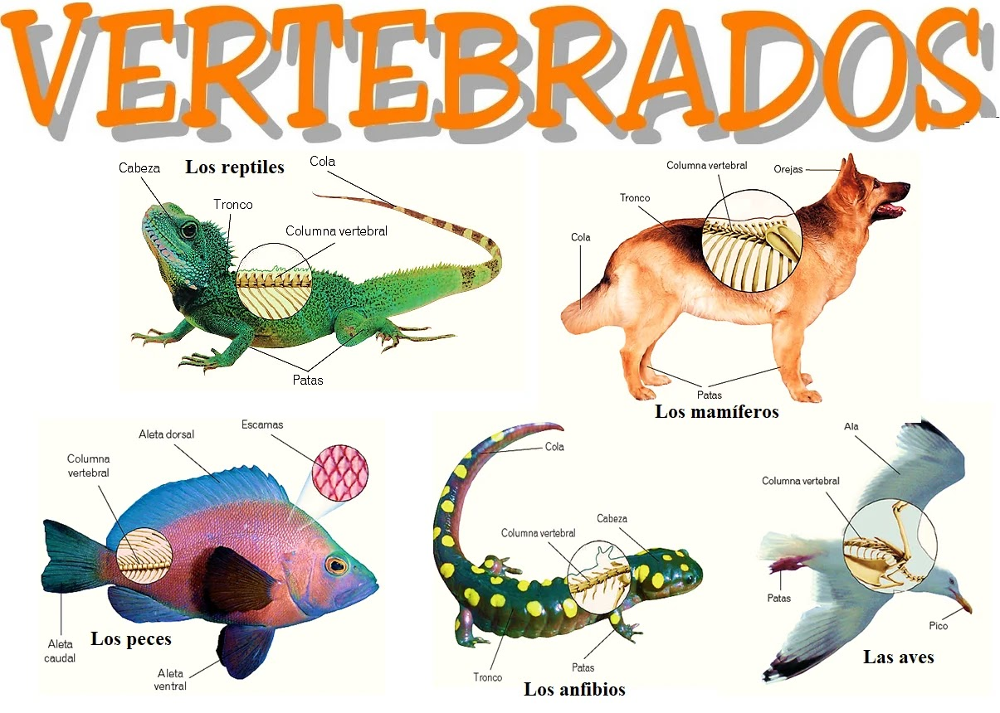

Los animales vertebrados son organismos multicelulares eucarióticos pertenecientes al reino Animalia que poseen una "columna vertebral".
Características de los animales vertebrados
-Poseen cráneo
-Presentan un esqueleto
-Viven en diversas regiones de la tierra: algunos son acuáticos como los peces, otros son terrestres como los leones, unos viven en los desiertos,
como las serpientes, y otros habitan regiones heladas como los pingüinos y osos polares.
-Poseen un sistema nervioso y endocrino que controla y regula las fucniones corporales.
-Se pueden desplazarse por diferentes medios: locomoción aérea (pájaros y murcielagos), locomoción terrestre (caballos y elefantes) locomoción
acuática (tiburones y rayas).
